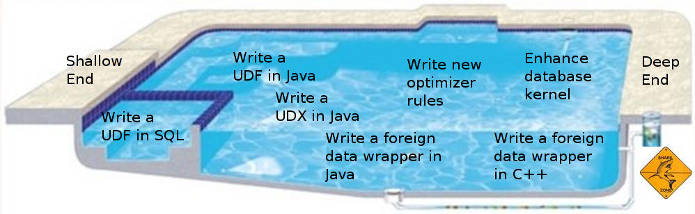

One of the nice parts about LucidDB's extensibility architecture is
that it is possible to modify the system in useful ways without ever
compiling or examining the source code. You can get in at the shallow
end by extending the system with your own user-defined functions
(UDF's) and transformations (UDX's), then later graduate to more
difficult undertakings such as extending connectivity with new foreign
data wrappers:

TBD: HOWTO List
- Write a UDF
- Write a UDX
- Build, debug, modify, and test the source code
- Write a foreign data wrapper in Java
- Write a new optimizer rule
- Include C++ code in a foreign data wrapper